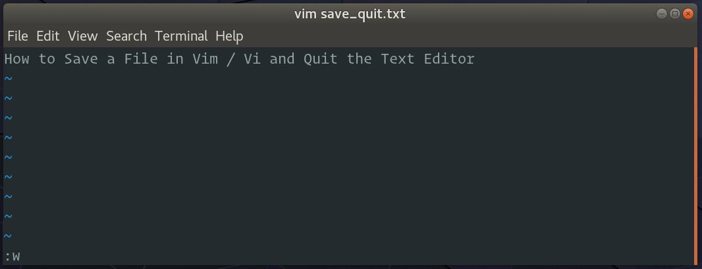
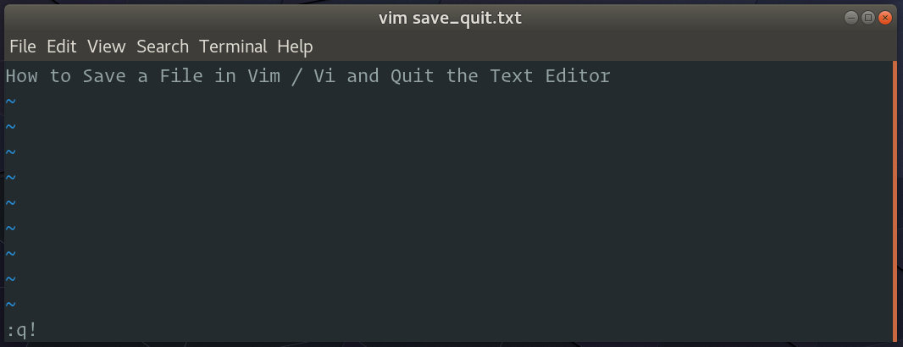

如何在 Vim/Vi 中保存文件并退出编辑器
对于许多在命令行上花费大量时间的用户来说， Vim 是首选的文本编辑器。与其他编辑器不同， Vim 有几种操作模式，对新用户来说可能有点吓人。
Vim 或其前身 Vi 预装在 macOS 和几乎所有 Linux 发行版上。如果遇到您最喜欢的编辑器不可用的情况，了解 Vim 的基础知识将会对您有所帮助。
在本指南中，我们将解释如何在 Vim/Vi 中保存文件并退出编辑器。
Vim 模式
刚启动 Vim 编辑器时，您处于命令模式。在此模式下，您可以使用 vim 命令并浏览文件。
为了能够输入文本，您需要通过按键进入插入模式 i 。此模式允许您以与在常规文本编辑器中相同的方式插入和删除字符。
要从任何其他模式返回命令模式，只需 Esc 按键。
在 Vim/Vi 中打开文件
要使用 Vim 打开文件，请输入 vim 命令后跟要编辑或创建的文件的名称：
vim file.text
打开文件的另一种方法是启动编辑器后，输入 :e file_name， 其中 file_name 是要打开的文件的名称。
在 Vim/Vi 中保存文件
在 Vim 中保存文件的命令是 :w 。
要在不退出编辑器的情况下保存文件，请按 Esc 切换回命令模式，键入 :w 并按下 Enter 。

- 按
Esc - 类型
:w - 按
Enter
还有一个更新命令 :up ，只有在有未保存的更改时才会将缓冲区写入文件。
要以不同的名称保存文件，请使用 :w filewname 并点击 Enter 。
保存文件并退出 Vim/Vi
在 Vim 中保存文件并退出编辑器的命令是 :wq 。
要保存文件并同时退出编辑器，请按 Esc 切换到命令模式，键入 :wq 并按下 Enter 。
- 按
Esc - 类型
:wq - 按
Enter
另一个保存文件并退出 Vim 的命令 :x 只有在有未保存的更改时才会将缓冲区写入文件。
退出 Vim/Vi 而不保存文件
要退出编辑器而不保存更改，请按 Esc 切换到命令模式，键入 :q! 并按下 Enter 。

- 按
Esc - 类型
:q! - 按
Enter
结论
在本指南中，我们向您展示了如何在 Vim 中保存文件并退出编辑器。如果您是 Vim 的新手，请访问 Open Vim 网站，在那里您可以通过互动教程练习 Vim 。